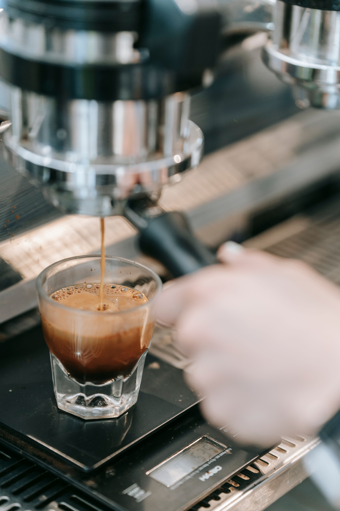

Our Story
Simple coffee, roasted with deep intention and patience.
A Quiet Pursuit of Perfection
Bean & Co. began in 2024 as a small pop-up cart with one simple mission: eliminate the noise and rush from specialty coffee, returning focus to exceptional single-origin flavor and genuine warmth.
We work directly with smallholder farming co-operatives across Latin America and East Africa. Every batch is roasted on-site in small quantities to preserve the unique micro-climate character of each harvest.

Our Journey
The Pop-Up Cart
Launched at the weekend farmers market with a single espresso machine and two single-origin beans.
Our First Brick & Mortar
Opened our flagship cafe in the historic Craft District, building out the space with reclaimed timber and slate.
In-House Micro-Roastery
Brought our roasting operation fully in-house and launched direct farm-trade relationships across Guatemala and Ethiopia.
What Drives Us
Ethical Sourcing
100% direct-trade partnerships guaranteeing fair wages above market rate for growers.
Obsessive Precision
Every shot weighed, measured, and extracted to exact recipe parameters.
Quiet Hospitality
An unhurried space designed for conversation, reflection, and community.